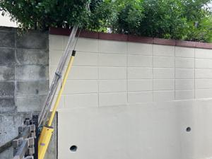

うるがいの話 ある日
最新: ２期生の後輩【うるがいの話 ある日】とは 一日だけのプログです
『うるがいの話』の最新一日だけのプログで、通信料が少なく経済的だ。カニの画像をクリックすると全ての日付が載る『うるがいの話』サイトを表示します
|
|
【うるがいの話】 うるがい(ｳﾙｶﾞｲ urugai)とは、『もずくがに』の名前でとても大きくなります。 |
|---|---|
|
|
【カミマヤーの話】 猫のことを方言でマヤーといいます。カミマヤー（kamimayaa）とは、神の猫のことです。 |
|
【たながぁの音楽】 たながぁ（ﾀﾅｶﾞｰ tanagaa）とは手長えびのことで、何種類かあり大きいのは車 エビぐらいになります。 |

|
【ぶながぁの話】 ぶながぁ(ﾌﾞﾅｶﾞｰ bunagaa)とは、赤い髪の毛、赤い身体、そして身長は１ｍ２０ｃｍ ぐらい、川の蟹を食べているの目撃された。場所は沖縄県国頭郡大宜味村のと ある村僕の隣近所に住んでいる爺さんから、聞いた話です。 |
|
|
【ギーマの話】 ギーマ(giima)とは、山原の里山に咲くスズランに似た、 花を付けます。実は食べられます、 気が付くと口の周りが紫になっています。 |
2023年10月17日 (火）２期生の後輩
17:26

後輩の告別式の開始の一時間前に、会場に着く。あまりにも早く誰もいなかっ
た。式典が行われる３階まで上がり、写真を拝む。仕方ないので、受付が行わ
れるロビーで待つ。１１時２０分頃、遺族が来る。係に人が、受け付け担当の
人達に５分程説明、それが終了するのを見届け１１時半に、名前の傍に一期生
と書いた香典を受付係に渡す。事情で、焼香はできませんがと式場を後にする
。嫁のお義母さんが診察を受けている病院で移動する。１２時過ぎにヨメとお
義母さんを乗せ病院を後にする。やはり、１２時からの告別式には参加できな
かった。後輩は、大学生の時から知っていて、サントリーを担当していた大阪
勤務も、そしていろいろと仕事では私と衝突した（と職場の人が言っていた）
が、いろいろと助けて貰った。五回以上の横浜での出張は、いつも二人で待ち
合わせをして仕事の相手先の場所へ行った。ナハマラソンでは、彼の子供の応
援のついでに私も中間手前でドリンクを何度かもらった、冥福を祈る。
１７時１９分 ビットコインの総資産 ￥１２、２９０（↑２３３）